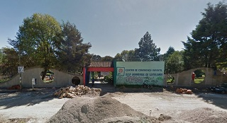
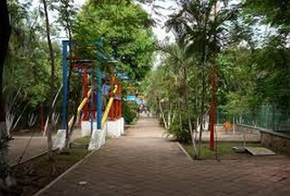
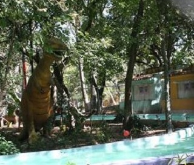
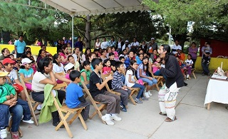
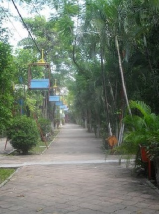

El Parque de Convivencia Infantil es el sitio dedicado a los niños, cuenta con juegos mecánicos y teatros al aire libre, rodeados de amplios jardines en los que es posible apreciar el proceso histórico de Chiapas y México, a través de pequeños monumentos que hacen referencia a sus escenas más representativas. Abierto de martes a domingo de 9 a 19 hrs.
Se encuentra ubicado en el periferico norte poniente antes de llegar a la salida a la carretera a chamula.
Si usted trae carro y se encuentra ubicado en la avenida crescencio rosas a la altura de la plaza de la paz puede continuar manejando dos cuadras en ese sentido hasta encontrar la calle 1 de marzo para dar vuelta a la izquierda sobre esa calle, avanza una cuadra y nuevamente da vuelta a la izquiera en la calle 5 de mayo para tomar esa calle derecho hasta salir al boulevard juan sabines gtz, de vuelta a la derecha y continue todo derecho hsata llegar a soriana y de vuelta a su derecha para tomar el periferico norte poniente y continue derecho hasta encontrar convivencia infantil, como referencia usted pasará la coca y el restaurant la fonda de candelaria antes de llegar a convivencia.
En el lugar es un parque público donde usted puede practicar diversas actividades como:
* Caminatas/expediciones
* Cicloturismo
* Fotografia
* Circuitos/expediciones
* Juegos
* Observación de flora
* Teatros
* Monumentos





posicione el mouse sobre las imágenes